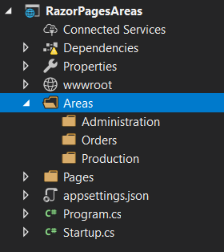
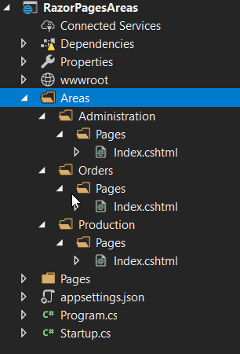

The Areas feature in Razor Pages originates from the MVC development model, where each area represents a functional segment of the application, such as administration, orders, production, and so on. In MVC applications, each area is a self-contained unit consisting of its own controller, views and model. This can be useful in larger projects, where having a single set of folders for all of the controllers, views, and models can become difficult to manage.
The primary use case for areas in Razor Pages is to facilitate the introduction of Razor class libraries, specifically the change that resulted in the introduction of Identity as a class library in ASP.NET Core 2.1. Areas in Razor Pages can also be used to divide the application up into functional segments similar to MVC.
Configuration
Areas do not offer much by way of configuration. They are enabled in one of two ways in Razor Pages. The first is to set the compatibilty version to 2.1 in the Startup ConfigureServices method:
services.AddMvc().SetCompatibilityVersion(CompatibilityVersion.Version_2_1);
The second method is to set the RazorPagesOptions.AllowAreas property to true (also in ConfigureServices)
services.AddMvc().AddRazorPagesOptions(options =>
{
options.AllowAreas = true;
});
Creating Areas
Razor Pages expects to find areas located in a folder named Areas, which needs to be created manually in the root of the application. Unlike when you are working in an MVC application, there is no specific tooling support in Visual Studio for the creation of areas in Razor Pages.
Each folder within the Areas folder represents a specific area. The following image illustrates areas for Administration, Orders and Production in an application:

Razor pages within an area must be placed in a folder named Pages. The next image shows an Index.cshtml file added to each area:

Managing Namespaces
The namespace for the PageModel is generated from the location of the file. In this particular example, the namespace for the IndexModel in the Production area is RazorPagesAreas.Areas.Production.Pages. This is not picked up by the @model directive in the content page. You can either alter the @model directive to use a fully qualified namespace (which you would have to do for every other page that you add to the area) or you can add a ViewImports file to the Pages folder in the area to set the namespace for all pages:
@namespace RazorPagesAreas.Areas.Production.Pages
Routing and URL generation
The name of the area forms the first segment of the URL path. Thereafter, pages are reached in the same way as the default routing in Razor Pages - file names and folders form segments of the URL. If you run the example application now, you can reach the Index file in the Administration area by going to https://locahost:xxxxx/administration or https://locahost:xxxxx/administration/index (where xxxxx is the port number that your application has been assigned).
When you use the anchor taghelper to generate your links to items in areas, you must use the asp-area attribute:
<ul class="nav navbar-nav">
<li><a asp-page="/index" asp-area="Administration">Administration</a></li>
<li><a asp-page="/index" asp-area="Orders">Orders</a></li>
<li><a asp-page="/index" asp-area="Production">Production</a></li>
</ul>
...unless you are generating links between pages within the same area. Here is the Administration area Index page with a link to Create.cshtml, also located in the Administration area:
@page
@model IndexModel
@{
}
<h1>Administration Area</h1>
<a asp-page="/Create">Create</a>
If using the RedirectToPage method to transfer someone to a location within an area, you should use the overload that takes an object representing route values to specify the area:
public IActionResult OnGet()
{
return RedirectToPage("/Create", new { area = "Administration" });
}
The leading slash is not necessary when using RedirectToPage from within a Razor page, but you must use it when redirecting from outside of a Razor page, such as from an MVC controller.
Layouts in Areas
Areas are not affected by the Layout instructions included in the standard ViewStart file in the /Pages/Shared folder in the root of the application. If you copy the default ViewStart file to the Areas folder, all areas will adopt the default layout files. ViewStart files setting different layout pages can be placed in the individual area folder or their Pages folder to override this behaviour.